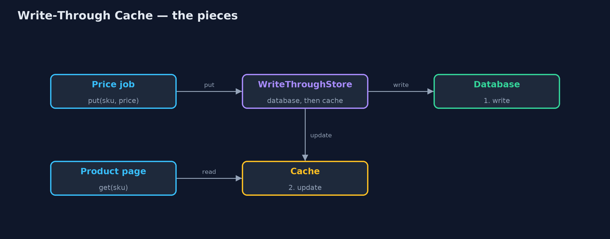
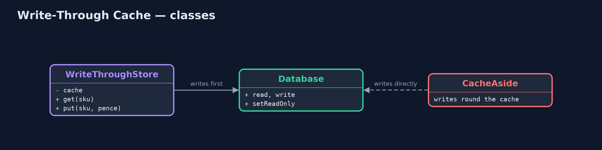
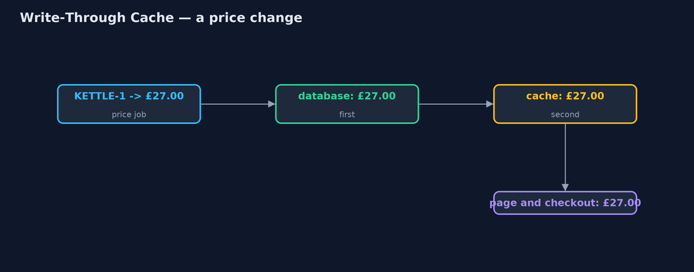
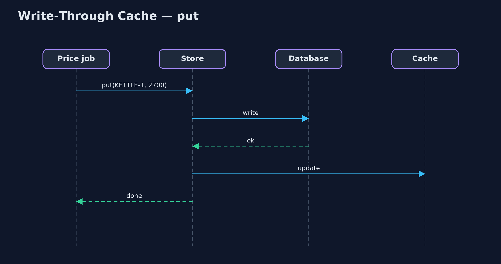

Write-Through Cache Pattern
src/main/java/com/jk/explore/writethrough/
├── CacheAside.java Without the pattern: the product page reads through a cache, but price changes are written straight to the database
├── Database.java The prices table: the source of truth
├── WriteThroughDemo.java The five acts: a write that goes round the cache, write-through, fast reads, a refused write, and the bill
└── WriteThroughStore.java The pattern: every write goes through the cache, which writes the database first and then updates itself, before returningSend every write through the cache, which writes the database first and then itself before returning, so reads from the cache always match the database.
Write-Through is a caching pattern. Reads are served from a fast cache, and every write goes through that same cache: it writes the database, and as soon as the database accepts, it updates its own copy, before telling the caller the write is done. Nothing writes to the database around the cache.
Because the cache and the database always change together, a read from the cache is never out of date. The price is that every write waits for the database, and the cache fills with everything that was ever written.
The idea in everyday terms
Think of a supermarket where the price on the till and the label on the shelf must match. Under write-through, the person who changes a price in the till system also changes the shelf label, straight away, before moving on to the next product. Nobody changes the till price and leaves the label for later, so a customer never sees one price and pays another.
The scenario
The online store's product page reads prices from a cache, and checkout reads them from the database. A nightly job updates prices by writing straight to the database. One night it cut the kettle to £27.00 and forgot to clear the cache: the page kept showing £30.00 while checkout charged £27.00.
Run
./gradlew runThe demo tells the story in 5 acts, each printing exact numbers that the tests check:
| Act | What it shows |
|---|---|
| 1. A write round the cache | The price job writes £27.00 straight to the database; the page (cache) shows £30.00 while checkout charges £27.00. |
| 2. Write-through | The job calls store.put: the database, then the cache, before returning; page and checkout both show £27.00. |
| 3. Fast reads | 100 page views: 0 database reads; all served from the cache. |
| 4. A refused write | The database is read-only; the £25.00 write fails and the cache is untouched: both still say £27.00. |
| 5. The bill | 1000 nightly price updates spend 20 s waiting for the database, and all 1000 sit in the cache. |
Test
./gradlew test7 tests in DemoRunsTest, WriteThroughStoreTest. Every number the demo prints is asserted, and nothing depends on the clock, so every run gives the same result.
Technologies and versions
| Technology | Version | Used for |
|---|---|---|
| Java | 21 | the code (toolchain set in build.gradle) |
| Gradle | 9.2.1 (wrapper) | build and run, nothing to install |
| JUnit | 5.10.2 | the tests |
| videokit | repository tool | the narrated video and animation: Piper en_US-amy-medium, speed 0.8, longer pauses (the approved amy-slow voice) |
Learning Material
| Document | What it is for |
|---|---|
| Problem statement | the situation and what the project must show |
| Prerequisites | what you need to know first |
| Write-Through Cache, explained | the acts in prose |
| Session guide | a one-hour lesson with exercises |
| Animated walkthrough | the acts step by step, narrated |
| Spec | what this project must be true of |
The pattern in one picture
Writes go through the store; reads come from its cache.

Where each piece sits
One store in front of the database.

How the data moves
Both copies change before the job carries on.

Who calls whom, in order
The caller waits for both.

Video
video/write-through-cache-pattern-explained.mp4 (with .m4a audio and .srt subtitles) is built by video/build_video.sh. Rendered media is not committed.
What it costs
- Every write waits. 1000 nightly price updates spend 20 seconds waiting for the database.
- The cache fills. Everything written goes into the cache, even products nobody will look at.
- All writes must go through it. A single job that writes around the cache brings back stale reads.
When this is too much
When writes are frequent and speed matters more than immediate safety, write-behind is faster. When most written data is rarely read, cache-aside (load on first read) keeps the cache smaller. Write-through suits data that is read often and must never be seen out of date, such as prices.
Where you have already met this
- Hazelcast and Ehcache
write-throughconfiguration with aCacheWriter. - Spring's
@CachePut, which updates the cache when a method writes. - CPU caches, which can be configured write-through to main memory.
Where this sits
This project is in micro-services-design-patterns, next to Write-Behind Cache, which writes the database later, and Cache-Aside, which loads the cache on reads.